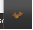
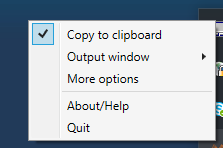
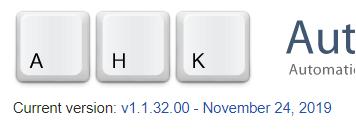
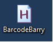
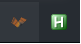
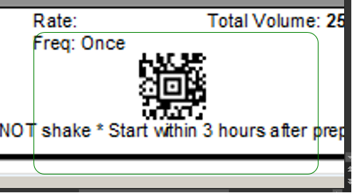

This is a recommendation for a virtual barcode scanner that I use.
There are two parts:
1) A desktop virtual scanner that sends what it reads to the clipboard (unless you are lucky and the scanner sends to window correctly).
2) A shortcut using AutoHotKey that "sends" what is in your clipboard to your app (if needed).
Note that you turn the scanner “ON/OFF” by clicking this icon in your tray

Make sure, with the scanner OFF, to right click on the icon and check mark “copy to clipboard”

Although the Virtual barcode reader can “output window” the scan…it doesn’t work with Citrix in my experience. So download the current version of autohotkey: https://autohotkey.com/download/

SAVE the BarcodeBarry file linked here anywhere (network drive, desktop, your documents, etc): Barcode Barry Auto Hot Key File
Simply double click/open the BarcodeBarry file (it will look like it did nothing, but it should be running in your tray)

You are the owner of a sweet fully integrated PC barcode scanner (configured with "/" prefix/suffix) if you see both of these icons running in your tray

Using your scanner:
There are two ways to fire a scan (assuming you can NOT use the Orpaliss Scanner directly to the output window).
Capture the scan code from your screen. You know it worked when the box turns green:

OR, you can directly copy and paste something to scan (a NDC, order ID, etc). Either way, the “barcode” is stored in your clipboard. NOTE: you do not need the virtualized scanner at all if you are just copying values. It is the running “H” application in your tray that is really submitting the scan.
Pull up Epic and fire off your scan using this keystroke combo: Windows button + b
Fire it off over and over again. The keystroke will send off whatever is last stored in the clipboard.